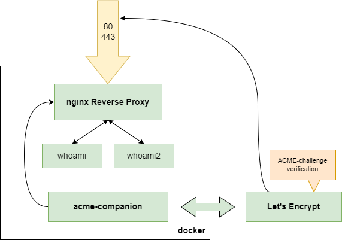

Установка Nginx и получение HTTPS-сертификата Let's Encrypt
Сертификат получен с помощью certbot по стратегии ACME + Nginx Mode.
Ссылка на скринкаст: Google Drive
Установка Docker и запуск статического сайта
В ходе работы был запущен веб-сервер Apache.
Ссылка на скринкаст: Google Drive
Docker Build & Push & Run
Образ создан на основе alpine:3.16.0.
Страница на Docker Hub: balrundev/nginx-static-test
Запуск нескольких экземпляров веб-приложения с помощью Docker Compose
Приложение написано на языке Go.
Ссылка на скринкаст: Google Drive
Let's Encrypt & Nginx Proxy
Получение сертификатов обеспечивает acme-companion.
Ссылка на docker-compose.yml: GitHub Gist

Настройка VPN
В ходе работы установлено соединение через VPN-сервер Wireguard.
Ссылка на отчёт: Google Drive
Реализация дополнительной стратегии OAuth 2.0
Добавлена стратегия входа через VK.
Ссылка на репозиторий: GitHub
Ссылка на скринкаст: Google Drive